It has taken me a shamefully long time to identify this unmissable abandoned icon on Columbus's east side, though I've had the photos since (this is embarassing) April of 2000. Basically, the hardest type of building to identify is an anonymous industrial building. If I'd had any experience with large-scale agri-business I would have known on sight (as you probably do) that it's a grain elevator. It just seemed unfathomable to me that so much grain could be stored in one place. But then, what could? A guy wandering by in the neighborhood said he thought it was for salt, and for a while I thought that a possibility. Feel free to laugh.

Yes, it's an industrial grain elevator, most recently purchased by a corporate construct called "Main and Nelson, LLC" but built and long operated by the famous "Supermarket to the World," agricultural behemoth Archer Daniels Midland. One of my smartest contributors, Tim Chrismer, found the stats on the place, and they're impressive. It apparently has "a capacity of over 2 million bushels--enough to fill over 400 railroad hopper cars. A bushel is about 55-60 pounds of corn, soybeans, or wheat, so this facility will hold about 60,000 tons of grain."
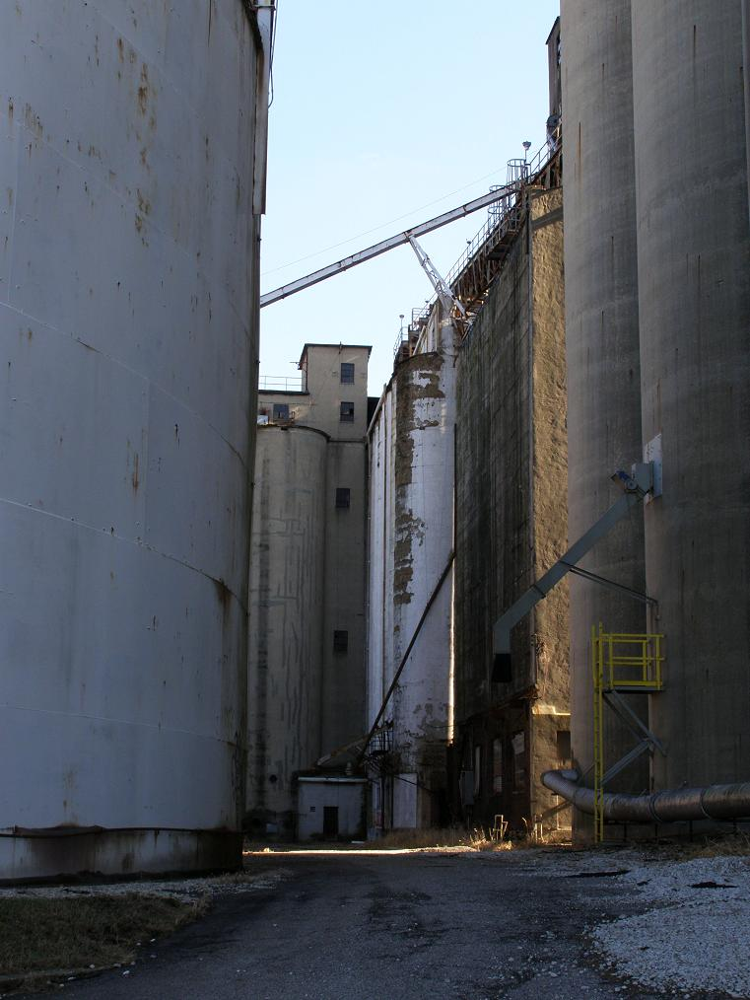
This particular elevator stands just west of the railroad tracks that quite startlingly divide the very poor East Main Street neighborhoods from shiny, trendy, good-school-district Bexley, which is where not only the Columbus mayor's official residence is located, but also the Ohio governor's mansion. The sudden switch in socioeconomics is visually striking, and this rather unsightly set of abandoned concrete towers quite literally marks the place where the "wrong side of the tracks" begins, if you're headed west on East Main.
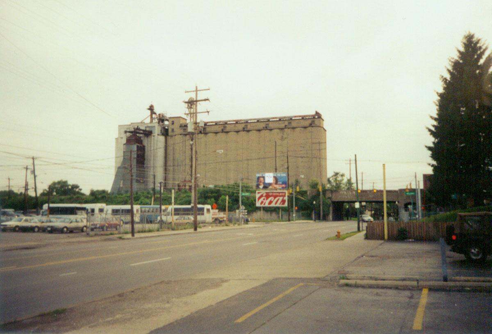
The Landmark elevator is easily confused with another, similar-looking grain elevator on the east side, this one still owned by ADM, on Hamilton Road just south of the exit from I-70. That one is not quite abandoned, though it doesn't seem to get much use. Both are easily seen from 70, but the one further out is bigger: its capacity is 4.4 million bushels, which makes it more than twice this one's size.
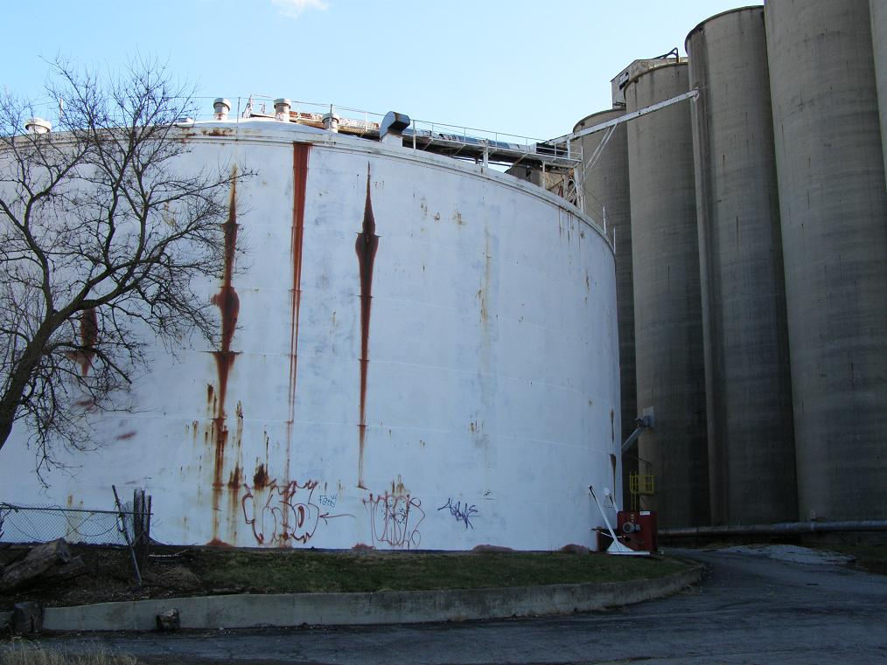
Farming stations in the ghetto might seem strange, but it's interesting to learn that the spot has been used for this purpose since the first of the silos were built in 1919. Back then this would have been nearly rural land--though close enough to the markets of the capital city, and with a position on a major railroad, to make it a prime halfway position. Three more stages of construction occurred in 1939, 1954, and 1960. Other buildings here were built as early as 1904 and as late as 1980. Each silo is 80-120 feet tall.

I do not have all the impressive photos this complex deserves, I admit. The biggest problem with places like this is that half the fun is the view from the top--not to mention the cold-sweat-inducing mile-long climb up the sheer concrete face of the curved silo wall, entirely dependent on a rusty enclosed ladder that feels like it's going to come unbolted any second and just tilt away. (Once you finally do reach the top your arms feel like you've done about 500 pull-ups and you're disconcertingly unsure you'll be able to make it back down at all.)
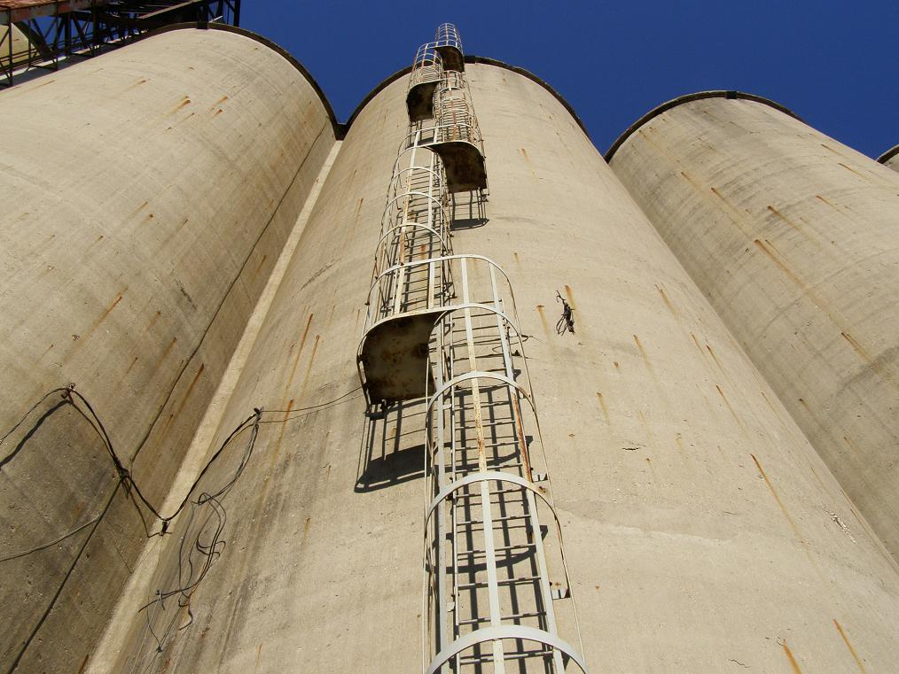
Climbing something like this, particularly in a neighborhood actively patrolled by cops and visible from a major city street, is not really feasible in the daytime, and conquering the top at night limits your photographic options. It's a challenge, quite exhilarating and terrifying, and incredibly fun, but my camera just can't take rooftop cityscape shots at night, and flash-photographing the various ladders and catwalks that adorn the roof would be a very ostentatious way to draw people's attention.
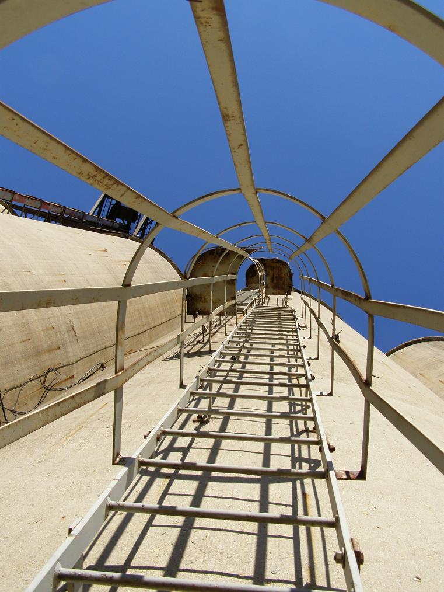
My Absurdly Dangerous Night on the Landmark Grain Elevator
When Hoss and I came here way back in 2000, it was the night before I was going to fly to NYC. No matter how tired I wound up being on the plane, it was worth it. First of all, there's the neverending climb up the scary ladder. (It does, however, switch back and forth, meaning you really only have to climb a reasonable ladder-length and then you can stand on the next platform--useful if you're starting to feel shaky.) On the top, Hoss and I climbed a ladder and found a catwalk used to check various gauges, and, being 19, we wrestled around up there. This was particularly disorienting and scary, because although I knew intellectually that if I fell I'd only drop a few feet to the broad, flat surface of the roof, every instinct fed by my peripheral vision and sense of balance was screaming at me that I was more than a hundred feet in the air, looking down on the city lights. It was dizzying.
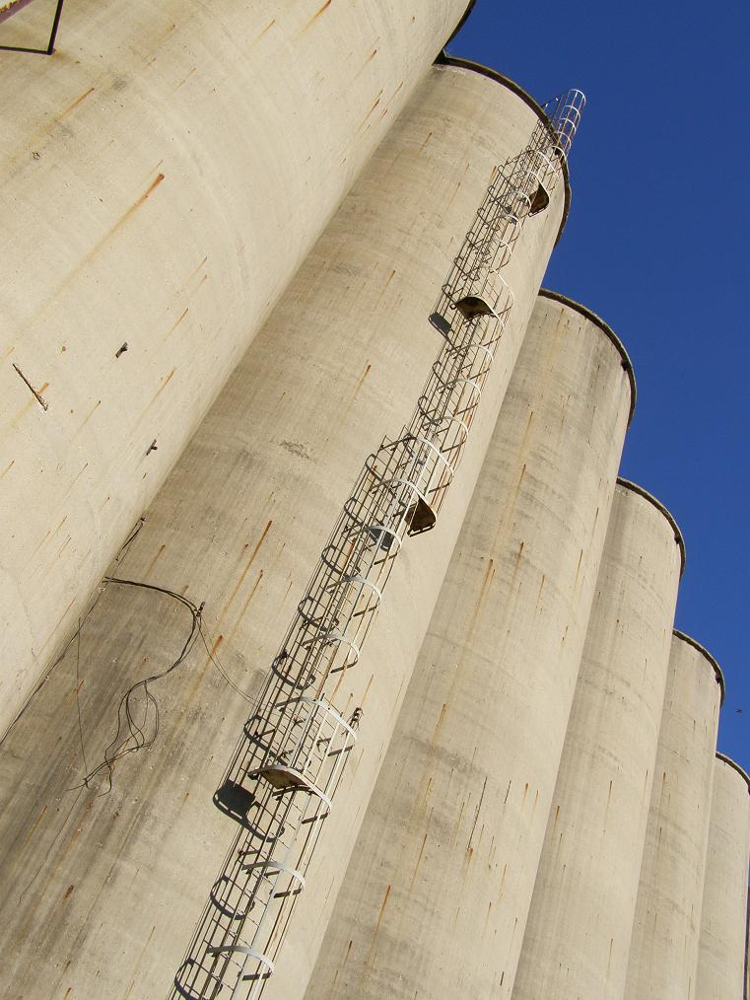
Also dizzying was walking up to the unprotected, railing-free edge of the rounded silos and looking down. I nearly couldn't do it, but did manage to inch my way up and take one look down. Hoss, who has a truly insane lack of fear of heights, took this opportunity to push me...and then hold me back by my tee shirt as I tipped over the lip of the 120-foot drop to the concrete apron below. It took a second for my body to shudder out the unbelievable fear and for my knees to give so I could hug the roof. This isn't something I would recommend doing on a tall, unprotected structure like this.
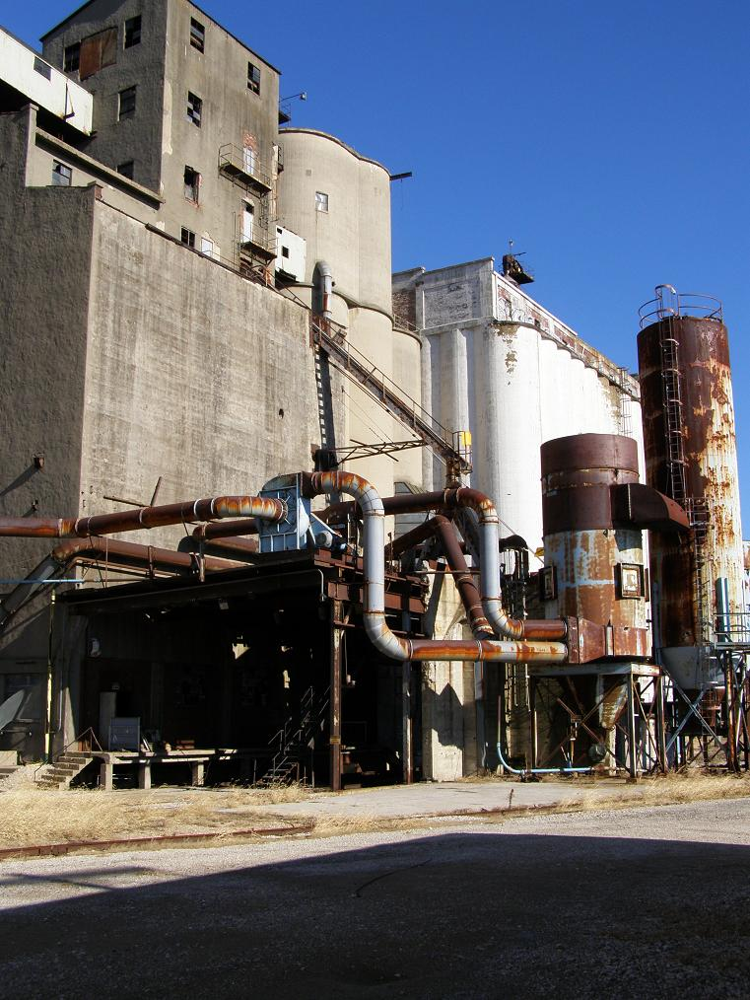
Down the center of the roof is an enclosed workroom-type area, very much like a long building that just happens to stand on top of the Landmark elevator. I don't know what kind of work people did here specifically, but it was full of worktables and forgotten tools. We took one bent crowbar of some sort and dropped it into an open metal hatch set into the concrete roor; it took many long seconds to fall through that unfathomable darkness before hitting bottom with a cacaphonous clang. It was definitely empty.
The grounds include several abandoned vehicles, including a regular truck with its tires rotted away and, more interestingly, a railcar used by the elevator people to push cars around on their sidings. It was in terrible shape but was fun to poke around in.

Rarely do you see actual railroad cars abandoned anywhere, but every once in a long while you'll come across one or two. I think they're hard to retire unless you're prepared ("you" being CSX or perhaps a heavy-metal manufacturer of train cars) to go through the process of scrapping the ridiculously heavy and dangerous thing from top to bottom. Given the inflated value of scrap metal these days, I'd imagine that's what happens to a railcar that outlives its functional life. Once in a great while, however, you do come across one that's been sidetracked on the property of some abandoned industrial center, like this one. The two train cars left to rust at this Landmark Grain Elevator are, I believe, the only ones I've ever seen abandoned like this. As you can see, the engine (hard to believe one would even be here, isn't it?) has chainlink fencing bolted all around its windows and doors so nobody will mess around inside.
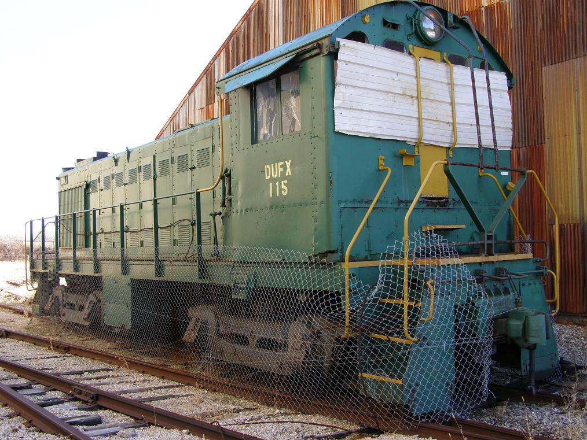
The railroad siding still abuts a very active CSX line, and the tracks are in good enough shape to store an unused railcar. It's also very simple to see how things were done here/are done here when the elevator is in full operation. Wide belts convey the grain out away from the main towers and into a filling station behind the main structure.
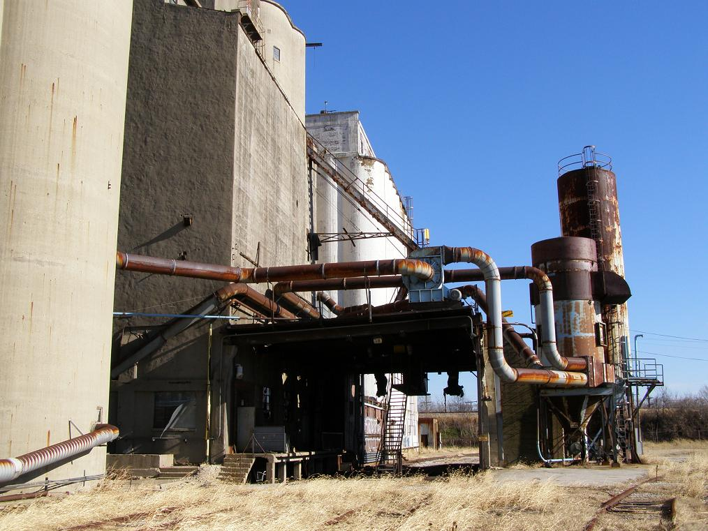
Next the stuff is funneled through a tapered, cup-type storage bin stationed above the place where trains pass through. They stop each open-top grain car (similar to coal cars, which are a common sight year-round in Ohio) directly beneath the funnel's opening, which can be sealed or opened wide, and let the elevator workers dump grain into the car until it's heaping full, nearly to the brim. I mentioned coal cars, but they're just noticeably because they're dirty; grain cars are part of nearly every train you see as well.
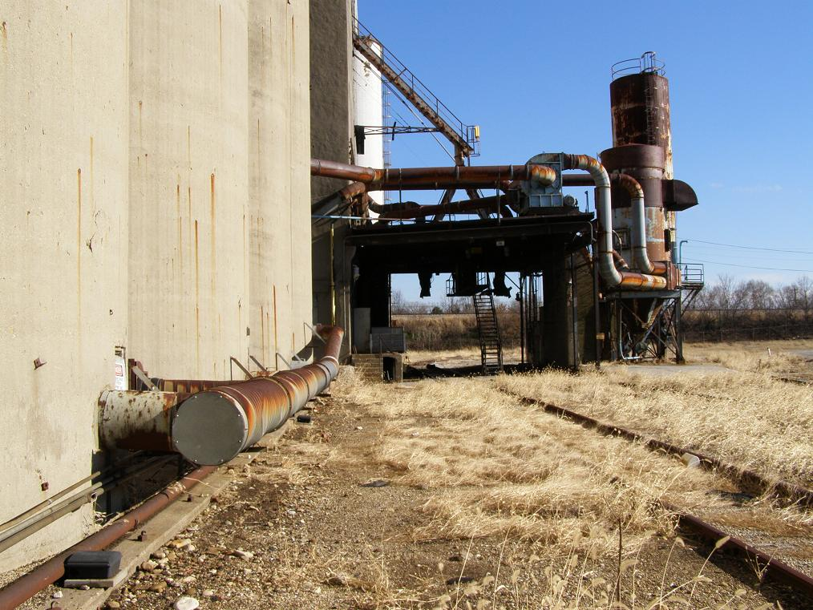
The Landmark Grain Elevator is still there, just west of the place where Alum Creek Drive hits East Main Street. You pretty much can't miss it if you're looking for it. I don't often say this, but I probably wouldn't recommend doing what we did. It's had nearly nine full years to deteriorate even futher, and I'd hate for anyone to have an accident there because they read about it here. Then again, it's such a standout building it would be impossible to hide from somebody determined to conquer it (and in many ways it is like a mountain), so I suppose what I say here won't have much effect.
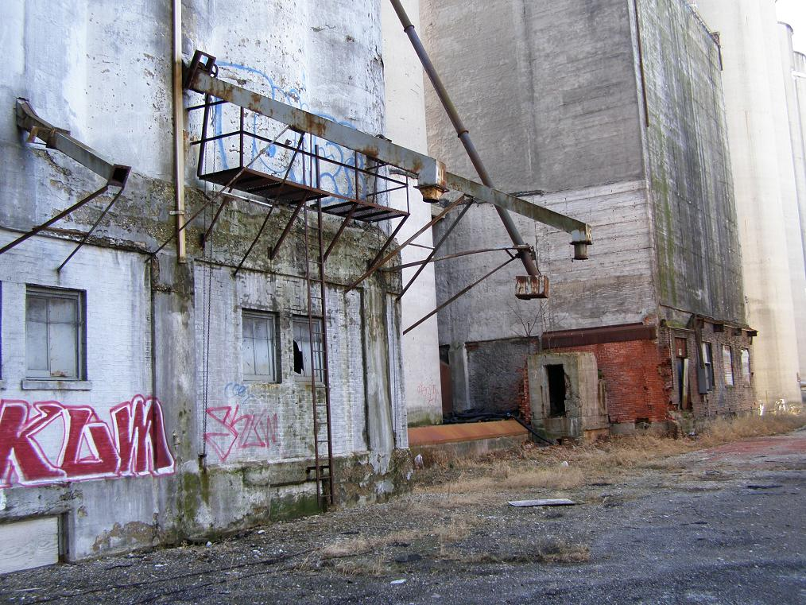
One final, very interesting note: After climbing the thing, Hoss and I were in its front yard, and he opened a huge fuse box and flipped a switch. Immediately a very loud motor kicked up somewhere up at the top of the silos. He switched it off right away. So, at least in 2000, there was still power, and the machinery still worked to some extent. Live power is always a dangerous component in a supposedly-abandoned place, so proceed with caution on that front, as well.
Additionally, it's worth noting that this is the very first exploration where I made use of my digital camera, and for that I owe Beth Santore a debt of gratitude--and then some. The photos with "dig" in their file names came from a December 2008 revisit, during which I ascertained that the place is pretty much exactly as we left it way back in the spring of 2000. Maybe a little more deteriorated, but that's to be expected. I'd actually recommend it as an easy exploration, as long as you take the rough neighborhood into account and don't park so it's obvious where you are and what you're doing.
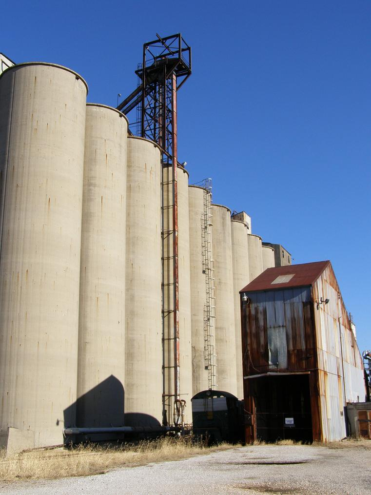
Archer Daniels Midland
Champaign Landmark
Back